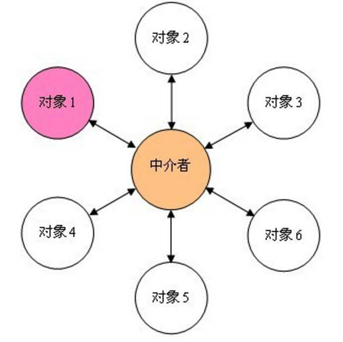
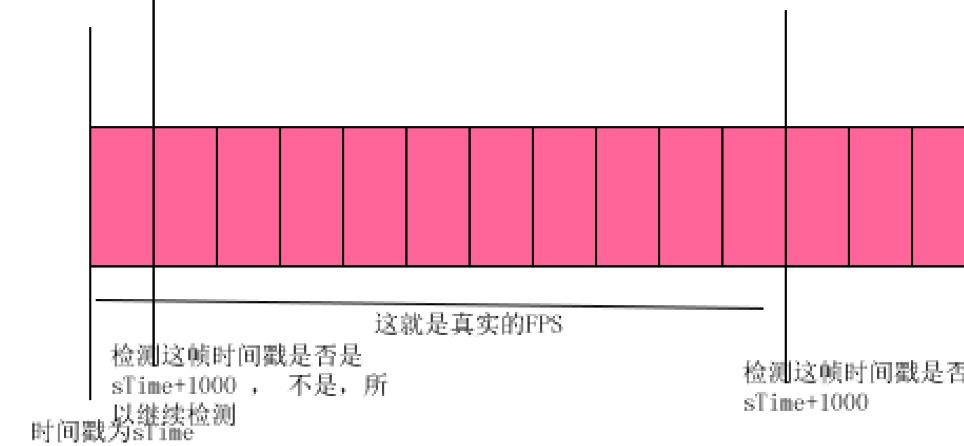

http://ejohn.org/blog/simple-javascript-inheritance/
官网
simple inheritence
游戏框架搭建
设计模式
面向组件开发设计模式 - 中介者模式
中介者设计模式 
在游戏开发中，game类就是最最核心的中介者，统领着全局，所有的对象，都是game的属性。 比如game有bird属性，有pipe属性。
FPS
每秒传输帧数(Frames Per Second)
也可以理解为我们常说的“刷新率（单位为Hz）”，例如我们常在CS游戏里说的“FPS值”
FPS检测： 